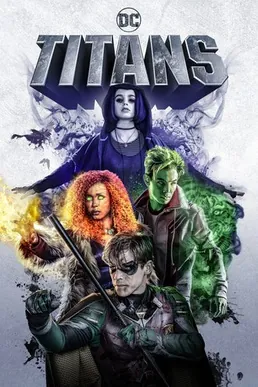

The genetics
Genetics enters through Superboy. Conner Kent is a clone created at Cadmus Laboratories from the DNA of Superman and Lex Luthor, and the series frames his character around that double inheritance: his actor describes a capacity for both great good and great evil. Cadmus, linked to Luthor, is presented as a malevolent laboratory, while the scientist who made Conner, Dr. Eve Watson, helps free him and saves his life when he is shot with Kryptonite. Conner escapes, joins the Titans and becomes one of the team's heroes. Other characters' powers come from heritage (Rachel's demon father, Donna Troy's Amazon blood) or from unspecified biological enhancement, as with Deathstroke and his daughter Rose, and Gar Logan's shapeshifting comes from a serum that cured a lethal disease; the sources do not frame these as genetic engineering. Cloning a hybrid of two people, one of them alien, is comic-book fantasy.
How genetics is portrayed
- Overall portrayal of genetics
- mixed A malevolent corporate lab is set against its sympathetic scientist, who saves the clone she made and helps him become a hero; genetics is one thread among many.
- Outcome of the genetic intervention
- mixed The cloning produces Conner, who escapes and becomes one of the Titans' heroes, but Cadmus holds him captive, remains a threat and he carries Luthor's capacity for evil.
- Cadmus Laboratories (Lex Luthor)
- villain Aim: power (negative). Luthor's Cadmus creates Conner from Superman's and Luthor's DNA and keeps him captive; the series presents the lab as malevolent.
- Dr. Eve Watson
- hero Aim: not stated (not applicable). The Cadmus scientist who made Conner helps free him and saves his life when he is shot with Kryptonite; the sources do not state her own aim.
The story
The series follows a group of young heroes who form, lose and re-form the Titans team. In season 1, Dick Grayson, Batman's former partner Robin, protects Rachel Roth, an empath whose father is the demon Trigon, and is joined by the amnesiac alien Kory Anders and the shapeshifter Gar Logan; Trigon is summoned and eventually banished. In season 2 the Titans re-form in San Francisco, with Bruce Wayne's money, and face the enhanced assassin Deathstroke, who blames Dick for his son's death and kills the new Robin, Jason Todd; Conner Kent, a clone of Superman and Lex Luthor who has escaped from Cadmus Laboratories, joins the team and is saved by his creator, Dr. Eve Watson. Season 3 moves to Gotham, where a resurrected Jason, manipulated by the Scarecrow, threatens the city. Season 4, in Metropolis, begins with Lex Luthor's murder and pits the Titans against a cult that wants Trigon's son, Sebastian, to destroy the world.